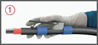
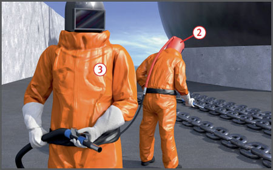

Gefährdungen
- Bei Strahlarbeiten können Strahlmittel (z. B. körnige Strahlmittel) unter hohen Drücken austreten und Personen verletzt werden.
- Beim Einatmen von Stäuben, sowie bei der Aufnahme von gesundheitsschädlichen Gefahrstoffen kann es zu systemischen Erkrankungen und Erkrankungen der Atemwege kommen.
Schutzmaßnahmen
Drucklufterzeugung und Druckluftaufbereitung
- Verdichter (Kompressor) außerhalb von Schadstoffquellen aufstellen.
- Ansaugfilter regelmäßig reinigen.
- Abdeckklappen stets geschlossen halten.
- Druckluftkühler und Druckluftbehälter mit Wasserabscheider versehen.
- Kondenswasser am Druckluftbehälter regelmäßig ablassen.
Strahlkessel
- Entlüftungseinrichtung auf Verschleiß hin täglich kontrollieren und rechtzeitig auswechseln.
- Abblasestrom vom Ventil über ein mind. 3,00 m langes Schlauchstück ableiten. Schlauchende befestigen (Schalldämpfung).
- Behälter zur Kontrolle des Füllstandes nur mit weichen Gegenständen abklopfen, z. B. Holz- oder Gummihammer.
- Behälter nach Schichtende komplett entleeren, um Verkrustungen und Anbackungen zu vermeiden.
Strahlmittel
- Nur nichtsilikogene Strahlmittel verwenden, z. B. Kupferschlacke, Schmelzkammerschlacke, Glasgranulat, Drahtkorn.
- Die Verwendung silikogener Strahlmittel, z. B. Quarzsand, ist verboten; der Quarzgehalt muss weniger als 2 % betragen.
Strahlschläuche
- Druckluftstrahleinrichtungen, die von Hand gehalten werden, müssen mit Totmannschaltung ausgerüstet sein
 , die beim Loslassen einen weiteren Austritt von Strahlmitteln und Druckluft verhindert und den Strahlschlauch druckentlastet.
, die beim Loslassen einen weiteren Austritt von Strahlmitteln und Druckluft verhindert und den Strahlschlauch druckentlastet.
- Schlauchverengungen vermeiden und auf einwandfreie Verbindungen achten.
- Beschädigte Schläuche austauschen.
Organisatorische Maßnahmen
- Vor Beginn der Arbeiten ist eine Gefährdungsbeurteilung durchzuführen.
- Strahlarbeiten nach Möglichkeit nur in Strahlräumen ausführen, z. B. Einhausungen oder festen Strahl räumen.
- Beim Trockenstrahlen Strahlräume absaugen.
- Verständigungsmöglichkeiten zwischen Strahlbläsern und Aufgabestelle sicherstellen, z. B. Sichtkontakt, Sprechfunk, Signaleinrichtung.
- Zur Beseitigung von Staubablagerungen nur geeignete und geprüfte Industriestaubsauger verwenden.
- Schutzmaßnahmen für mögliches Entstehen von feuer- und explosionsgefährdeten Bereichen festlegen.
- Betriebsanweisung aufstellen und Einhaltung kontrollieren.
- Beschäftigte über Gefährdungen und Schutzmaßnahmen mittels Betriebsanweisung unterweisen.
- Benutzung persönlicher Schutzausrüstungen überwachen, insbesondere Atem- und Gehörschutz.
- Filtereinsatz der Atemluftfilter regelmäßig erneuern.
- Funktion der Totmannschaltung kontrollieren.
- Persönliche Schutzausrüstungen in gesonderten Umkleideräumen getrennt von anderer Kleidung aufbewahren.
- Aufenthalts-, Umkleide- und Sanitärräume regelmäßig feucht reinigen.
- Vor dem Essen, Trinken und Rauchen Hände und Gesicht gründlich reinigen.
- Wartung und Reparatur von Geräten nur von befähigten Personen (z. B. Sachkundigen) ausführen lassen.
Persönliche Schutzausrüstungen
- Bei Strahlarbeiten mit reiner Staubbelastung aus dem Strahlmittel Strahlerhelm mit Prallschutzüberzug und Frischluftversorgung benutzen
 .
.
Darüber hinaus schulter- und körperbedeckende Prallschutzkleidung, Schutzhandschuhe und Sicherheitsschuhe tragen.
- Personen, die sich während der Strahlarbeiten im Gefährdungsbereich, aber außerhalb der Reichweite der Strahlarbeiten aufhalten, z. B. beim Beräumen, müssen ebenfalls Atemschutz benutzen, z. B. Halbmaske mit Partikelfilter 2 und ggf. auch Schutzkleidung, z. B. Chemikalienschutzanzug.
- Gehörschutz benutzen.
Persönliche Schutzausrüstungen bei Exposition gegenüber Gefahrstoffen
- Bei Arbeiten mit Exposition gegenüber gesundheitsgefährdenden, giftigen Gefahrstoffen glatte, einteilige, komplett belüftete Strahlerschutzanzüge des Typs 3 nach DIN EN ISO 14877 tragen sowie Strahlhelme mit umgebungsluftunabhängiger Atemluftversorgung
 .
.
- Die Anzüge (Kombinationsschutzanzüge) müssen eine EU-Baumusterprüfung besitzen. Erkennbar sind solche Anzüge an der auf dem Anzug angebrachten CE-Kennzeichnung sowie der vierstelligen Kennnummer der Konformitätsbewertungsstelle.
- Personen, die sich im Gefährdungsbereich während der Strahlarbeiten mit Gefahrstoffbelastung aufhalten, z. B. beim Entfernen von Strahlmittelrückständen, müssen ebenfalls Kombinationsschutzanzüge und Atemschutz tragen.
Zusätzliche Hinweise bei Freiwerden gefahrstoffbelasteter Stäube
- Beim Entfernen von z. B. blei-, arsen-, zinkchromat-, teer- und pechhaltigen Beschichtungen weitergehende Maßnahmen treffen. Dazu gehören:
- Einsatz von Absauganlagen, bei stationären Strahlräumen 40-60facher Luftwechsel/Std. und 40-50 Pa Unterdruck, bei Einzeltungen usw. mind. 5facher Luftwechsel und 20 Pa Unterdruck,
- Verwendung spezieller einteiliger und belüfteter Kombinationsschutzanzüge nach DIN EN ISO 14877 ,
- Getrennte Räume zur Aufbewahrung von Straßen- und Arbeitskleidung mit dazwischen liegenden Sanitärräumen.
- Kombinationsanzüge erst nach gründlicher Reinigung ablegen, z. B. durch Abspritzen, Absaugen.
Schutz der Umwelt
- Strahlschutt (abgestrahlte Strahlmittel und Beschichtungen) in Behältern sammeln und auf zugelassenen Deponien so einlagern, dass die Umwelt nicht belastet wird.
- Arbeitsbereich weitgehend einhausen und Einhausung nach Abschluss der Arbeiten reinigen.
Arbeitsmedizinische Vorsorge
- Arbeitsmedizinische Vorsorge nach Ergebnis der Gefährdungsbeurteilung veranlassen (Pflichtvorsorge) oder anbieten (Angebotsvorsorge). Hierzu Beratung durch den Betriebsarzt.
Prüfungen
- Strahlgeräte prüfen, die für einen ortsveränderlichen Einsatz vorgesehen sind,
- vor der ersten Inbetriebnahme durch eine zugelassene Überwachungsstelle,
- vor der Wiederinbetriebnahme an einem neuen Standort durch eine "zur Prüfung befähigte Person", nur
- wenn eine Bescheinigung über eine andernorts durchgeführte Inbetriebnahmeprüfung nicht vorliegt, oder
- wenn sich beim Ortswechsel die Betriebsweise, die Ausrüstung oder die Anschlussverhältnisse ändern, oder
- falls am neuen Standort besondere Anforderungen an die Aufstellung zu stellen sind.
- Wiederkehrende Prüfungen:
- Druck-Volumen-Produkt größer als 1000 bar x Liter: Prüfung durch zugelassene Überwachungsstelle innerhalb von festgelegten Höchstzeiträumen
- Druck-Volumen-Produkt bis zu 1000 bar x Liter: Prüfung durch "zur Prüfung befähigte Person" innerhalb von Prüffristen, die nach Herstellerinformationen und Erfahrungen mit Betriebsweise und Beschickungsgut festzulegen sind
07/2021